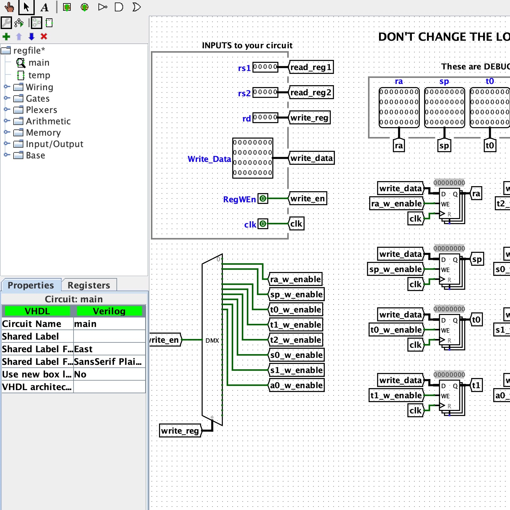
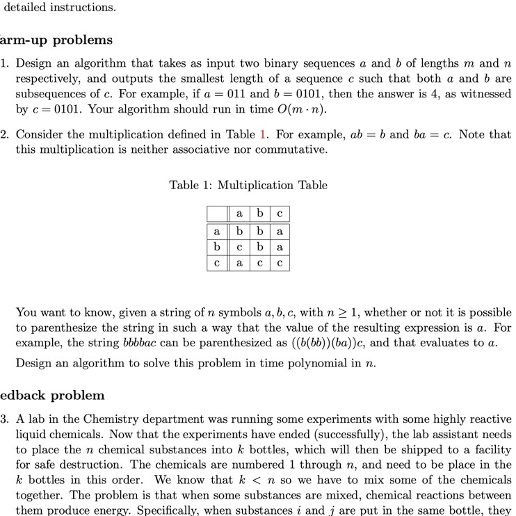

Description
-
COMP SCI 300
The second course of the Intro-to-cs series at UW-Madison. Introduces Object-Oriented Programming and basic data structures including list, stack, queue and BST. Also covers introduction to complexity analysis.
-
MATH 234
-
STAT 327
-
COMP SCI 400
The final course of the Intro-to-cs series.
-
COMP SCI 240
-
MATH 341
Proof-heavy class, don't take if you are not into it
-
MATH 431
Probably the easiest MATH 4xx class.
-

CS 61C @ Berkeley
Blah blah blah
-

COMP SCI 577
Legends say that this class is the most challenging class among undergraduate cs classes and Dieter's section is the hardest one. That being said, the takeaway is HUGE. I would strongly recommend taking it with Dieter if you have the chance. Topics covered D&C, DP, Greed, Network Flow and Computational Intractability. This class lays the foundation for coding interviews, so I would suggest taking this class ASAP (and grinding Leetcode problems) if you want to get a summer internship.
-
COMP SCI 520
Amos Ron once said, "Y'all should drop this class and take 577 instead. Later you will use what you learn in 577 on a daily basis, but you will not use what you learn in 520 ever again." Seriously though, if you are not that into theory/compiler/PL, just take 577 instead. To be honest, although I passed the class with a descent grade, I feel like I was being "知其然而不知其所以然" almost the whole time.
-
COMP SCI 540